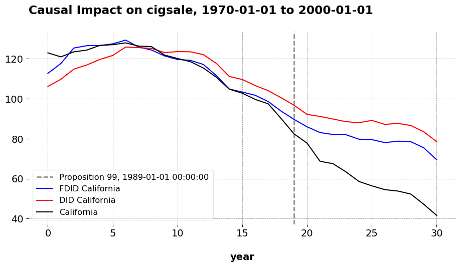

Synthetic Controls Do Not Care What Your Donors Are. So Why Do You?
Econometric Theory
Author
Jared Greathouse
Published
May 12, 2025
I was talking with someone recently about applying SCM, and I mentioned the idea of using a richer donor pool with different kinds of donors to answer a question. I had to articulate myself kind of carefully, since they were kind of puzzled about what I meant at first. For me, the idea comes very naturally to me, where we literally do things like this all the time. My intuition however comes from thinking about these models a lot (and empirical proof/evidence), and I think it may help others.
Many people do not understand the math behind the methods they use. If you asked most DSs who work with causal inference to formally prove when parallel trends holds like Pedro Sant’Anna does, or derive the bias bound of a new SCM as Abadie might, we likely would not have very many contenders. And that is okay, that is natural. After all, DS is a very applied field; the langauge of proof and formal math are typically far flung concerns of your typical data scientist, and I am certainly not an exception to this rule.
However, be that as it may, it is still important to know a little about why what you are doing is effective to begin with. Why? Well, intuition can only take us so far. Yeah, you may have a library like mlsynth or geolift on you machine (or whatever you run your code in), but how do you know which tool to use, when, and why? More importantly, what happens when something breaks and you do not get the results you expected? What if you get something wrong? Of course, some of this is black-box-y, but in my experience anyways, lots of the issues people run into are not research issues in the sense that their question is poor or the estimator is wrong; instead, they simply misunderstand or do not know econometric theory that leads them to using sub-optimal estimators or not doing basic checks. Again, this is not an issue of proof or technical depth; it is about knowing why your toolkit is effective in the very first place. This is much more crucial because if you do not know when your methods are expected to work well, you will not know if they fail or why beyond “that does not look right”. In a sense, you are sort of blindly applying calculus and algebra without much thought as it how any of it relates to your specific use case. Causal inference is built on assumptions. If you do not respect the assumptions and theoretical foundation of your estimator, its findings will disrespect your expectations.
This is kind of a broader problem in data science in many respects. Ostensibly, there are many myths about SCM, one of which is “the myth that SCM/[Augmented] SCM[s] don’t have assumptions like parallel trends”. I do not know who believes this myth, and I am inclined to think that widespread belief of this myth… is itself a myth. After all, even your most applied economists will tell you “yeah, SCM definitely has assumptions”. They may not be able to articulate what they are as formally as they could OLS, for example, but everybody in my experience knows SCM has assumptions that need to be met. Of course, whether they verify them is another matter entirely (if you know anybody who truly holds these beliefs about SCM not having assumptions, direct them to me so I can chat with them).
Either way, even there are not many people who confidently say/think “SCM has no assumptions”, a much better argument I think can be made that even if people do not literally think this… this is certainly the way many researchers act in practice. And that is the point of this post. Knowledge of econometric theory can serve as an augmentation to the skills of standard DS; even a little bit of it will not be in vain. As with cars, you may not know how to build an engine, but you will be well served if you know how and when to change spark plugs or fill your tire with air.
Basic SCM
People often bring up the condition of perfect pre-intervention fit as an assumption of SCM; this has beenrevisedsubstantially in recent years, but there is another one that people do not comment on enough: the idea of the linear factor model (or latent variable model) that often serves as a motivating data generating process. The linear factor model takes the form:
What does this mean? It simply means that our outcome observations are generated by a set of unit specific factors that are time invariant, and a set of time variant factors that are common across all units, plus some error term. These common factors may indeed affect each unit differently (in DID, the relationship is additive, not multiplicative), but the key idea is that we can use their similarity in terms of how they interact with the factor loadings to our advantage. Econometricians all the time tell us that SCM fundamentally is about matching our treated unit’s common factors to the common factors embedded in the donor set (also see conditons 1-6 here). This idea is the whole motivation for synthetic control in the very first place, the notion that we are predicting a counterfactual for one unit or group using only the control units that behave similarly to the treated unit. If we get a good match (usually), we are likely also matching close to the factor loadings. This idea holds regardless of what kind of control units they are.
A more flexible idea is the fine-grained potential outcomes model. This shifts the unit of analysis from groups (e.g., states, regions) to individuals within groups or regions. In this framework, groups are treated as distributions of individuals, and the goal is to estimate the ATT for the treated unit. This model allows for diverse donor types provided the aggregated donor outcomes reflect individuals who are exchangeable with the treated unit’s population.
The practical implication of this is that we are allowed to use different donor types (comparing cities to states, for example) on the condition that they help us learn about the trajectory of the target unit in the pre-intervention period. SCM does not care about what kind of donors you use, so long as they are informative donors.
Application
Unconvinced? We can replicate some results to show this using mlsynth.
Readers likely know the classic example of Prop 99, where California’s anti-tobacco program was compared to 38 donor states to estimate California’s counterfactual per capita cigarette consumption. But California is a ridiculously large economy, and is basically a small country by many metrics. So why do we need to use other states as the comparison units? Why can we not use larger, aggregated control units?
It turns out that we can do just that. Here, I compare California to the donor divisions of the United States. The outcome (tobacco smoking per capita) for the donor units are averaged over time at the division level. California’s remains as is. Just for demonstration, I compare the standard results (around an ATT of -17) to what we get when we use other estimators, except I aggregate the outcomes as I just described. Comparing across estimators, we can visually assess how well each method captures the pre and post-treatment trajectory for California using the aggregated division data, relative to the baseline result that uses the states as donors.
import pandas as pdfrom mlsynth import FDID, TSSC, PDA# URL of the .dta fileurl ="http://fmwww.bc.edu/repec/bocode/s/scul_p99_region.dta"# Load the Stata file directly from the URLdf = pd.read_stata(url)df["Proposition 99"] = ((df["region"] =="California") & (df["year"].dt.year >=1989)).astype(int)# Base configurationbase_config = {"df": df,"outcome": df.columns[2],"treat": df.columns[-1],"unitid": df.columns[0],"time": df.columns[1],"display_graphs": True,"save": False,"counterfactual_color": ["blue", "red"]}# TSSC modeltssc_config = base_config.copy() # Start with base and modify if necessaryarco = TSSC(tssc_config).fit()
/opt/hostedtoolcache/Python/3.13.6/x64/lib/python3.13/site-packages/mlsynth/utils/datautils.py:434: FutureWarning: The default of observed=False is deprecated and will be changed to True in a future version of pandas. Pass observed=False to retain current behavior or observed=True to adopt the future default and silence this warning.
observations_per_unit = df.groupby(unit_id_column_name)[time_period_column_name].nunique() # Changed from .count() to .nunique() for robustness
/opt/hostedtoolcache/Python/3.13.6/x64/lib/python3.13/site-packages/mlsynth/estimators/tssc.py:408: UserWarning: Warning: Mismatch between number of donor weights (9) and names (8) for method MSCa. Donor weights will not be populated for this method.
warnings.warn(
/opt/hostedtoolcache/Python/3.13.6/x64/lib/python3.13/site-packages/mlsynth/estimators/tssc.py:408: UserWarning: Warning: Mismatch between number of donor weights (9) and names (8) for method MSCc. Donor weights will not be populated for this method.
warnings.warn(
Here is TSSC estimator, where we adjust for baseline differences using an intercept.
# PDA model with method 'l2'pda_config = base_config.copy()pda_config["method"] ="l2"arcol2 = PDA(pda_config).fit()
/opt/hostedtoolcache/Python/3.13.6/x64/lib/python3.13/site-packages/mlsynth/utils/datautils.py:434: FutureWarning: The default of observed=False is deprecated and will be changed to True in a future version of pandas. Pass observed=False to retain current behavior or observed=True to adopt the future default and silence this warning.
observations_per_unit = df.groupby(unit_id_column_name)[time_period_column_name].nunique() # Changed from .count() to .nunique() for robustness
Here is \(\ell_2\)-PDA estimator, where we allow for negative weights and an intercept.
/opt/hostedtoolcache/Python/3.13.6/x64/lib/python3.13/site-packages/mlsynth/utils/datautils.py:434: FutureWarning: The default of observed=False is deprecated and will be changed to True in a future version of pandas. Pass observed=False to retain current behavior or observed=True to adopt the future default and silence this warning.
observations_per_unit = df.groupby(unit_id_column_name)[time_period_column_name].nunique() # Changed from .count() to .nunique() for robustness

Here is the predictions of the FDID estimator, where we employ Forward Selection to choose the donor pool for the DID method.
Takeaway
The qualitative takwaway is that these all produce very similar predictions to the baseline estimates. Even though we have reduced the donor pool by 30 units, we still maintain enough variation in the donor set to predict California’s pre-treatment trends, and so long as we are doing that, we may generally use as many relevant donors as we like. The issue is not that donors in general do not matter. I wrote mlsynth precisely because I take donor selection seriously, so we use methods such as Forward Selection, clustering, or other techniques to choose the right donors for a given target unit, especially in high-dimensional settings. The key issue though is that the “right donors” do not necessarily need to be the same type of unit as the kind you are using, meaing we can be a little creative as to what we use as a donor. This is a philosophical question, not an econometric one. What matters is the relevance of the donor pool, as well as the richness of it so that we can construct better synthetic controls. If that means you compare buyers of one product to buyers of other products in online advertising, or an unusually large state/city to nations or states, then you may happily do that.
Note that these conclusions are valid becasue of the underlying econometric theory that academic econometricians work on. If you do not know the basic theory of when we may or may not use SCM, you may be making wrong decisions in your modeling strategy. Or, you may not be taking advantage of existing study qualities to make your analyses better. Whether or not you can do the theoretical proofs in the papers I cited above matters less than whether you can understand what they mean for the applied econometrician/data scientist. After many years of torment and thinking it through, you will be able to use these methods more confidently, and with much more clarity than before.